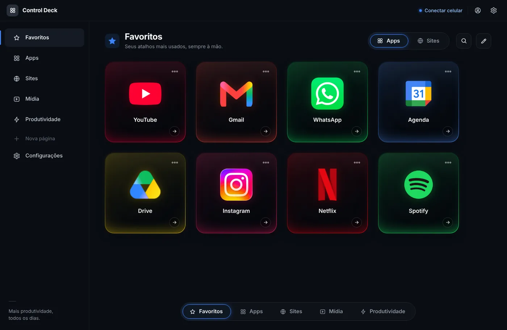
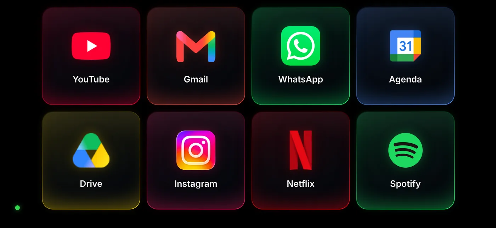
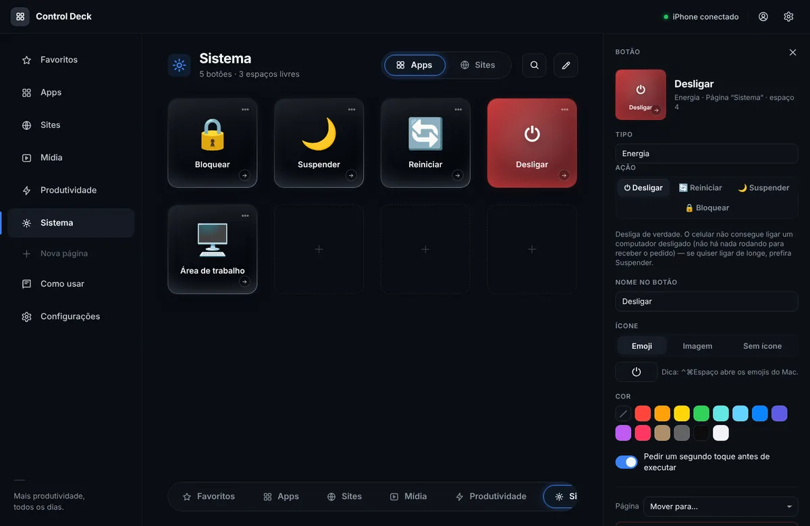
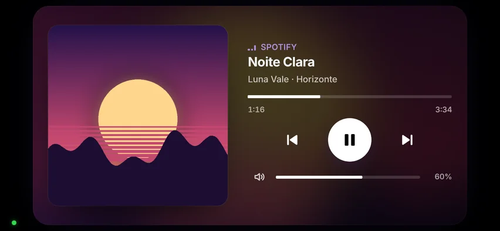
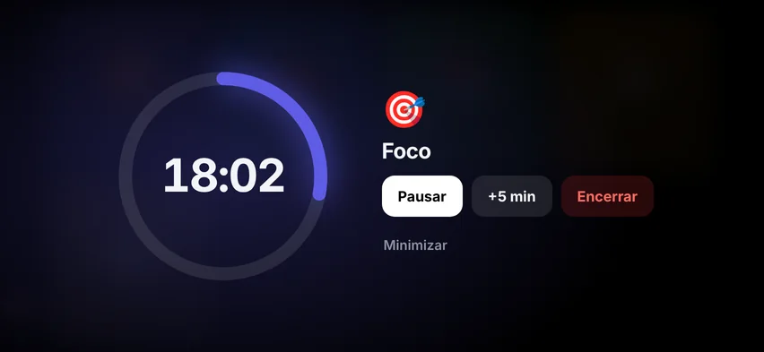
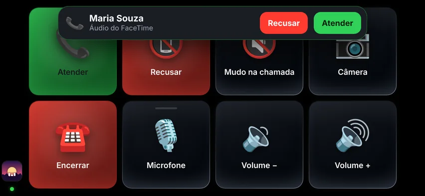
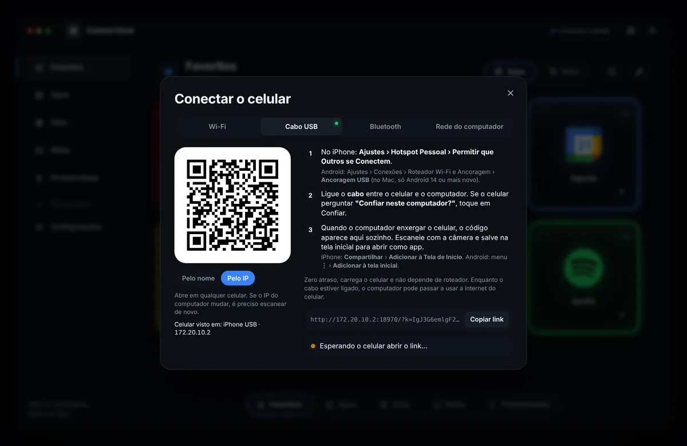
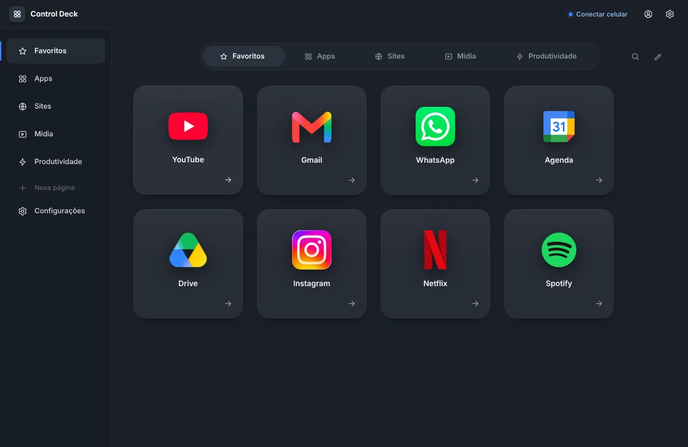

Seu celular vira um painel de botões para o computador.
Abra apps e sites, aperte atalhos, controle a música que está tocando, entre em modo foco, mute a chamada, bloqueie ou desligue o computador — com um toque, na tela do celular. Sem instalar nada no sistema: é uma pasta, um clique e um QR code.
Versão 3.2 · 270 KB · para Mac, Windows e Linux
No celular não tem o que baixar. O Deck roda no computador; o celular só escaneia o QR code que aparece lá e vira app na tela inicial.
Abra esta página no computador para baixar — ou mande o link para você mesmo:


Como funciona
Três passos. O computador roda um programinha; o celular abre uma página que vira app na tela inicial.
Ligue no computador
Cole uma linha no Terminal (Mac e Linux) ou descompacte a pasta e dê duplo clique (Windows). O editor abre no navegador.
Escaneie com o celular
Aponte a câmera para o QR code e salve na tela inicial. Pelo Wi-Fi, pelo cabo USB ou por Bluetooth.
Monte os botões
Escolha apps, sites e atalhos no editor. O celular espelha na hora, com os ícones de verdade.
O que os botões fazem
Cada botão é uma ação no computador. Os ícones vêm sozinhos: o do app como está instalado, o oficial do site.

A página Sistema, com os botões de energia e o painel de edição aberto.
DJ, foco e chamadas
O celular também mostra o que está tocando, segura o seu foco e cuida das chamadas.

DJ
O que está tocando no computador — Spotify, Música, YouTube, qualquer player — com capa ou miniatura do vídeo, tempo e controles. Nas outras páginas, um mini player fica no canto.

Modos
Foco, Trabalho, Estudos: um toque liga o Não perturbe, abre e fecha apps, ajusta o volume e põe um cronômetro grande na tela. Outro toque desfaz.

Chamadas
Mudo, câmera e sair no Zoom, Teams, Meet e outros, sem procurar a janela. No Mac, ligações do FaceTime e do iPhone aparecem no celular para atender ou recusar, e o mudo vale no FaceTime também.
Baixar o Deck
Versão 3.2 · 270 KB. Nada é instalado no sistema: o Deck é uma pasta. Para desinstalar, apague a pasta.
Pelo Terminal recomendado · sem aviso de segurança
Abra o Terminal (⌘ + espaço, digite Terminal), cole a linha abaixo e aperte Enter. Ela baixa o Deck para a pasta Deck da sua pasta pessoal e já liga.
Da próxima vez, é só dar duplo clique em Iniciar no Mac.command dentro da pasta. Se o Mac pedir as "ferramentas de linha de comando", aceite e rode a linha de novo. Para atualizar o Deck, rode a mesma linha: seus botões ficam.
Ou baixe o zip
Baixe o deck.zip, descompacte e dê duplo clique em Iniciar no Mac.command. Na primeira vez o macOS bloqueia ("A Apple não pôde verificar…"): clique em OK, abra Ajustes do Sistema › Privacidade e Segurança, role até o fim e clique em Abrir Mesmo Assim. É uma vez só. No macOS 14 ou anterior, basta botão direito › Abrir.
Pelo zip
- Instale o Python 3 pelo python.org — no instalador, marque Add python.exe to PATH.
- Baixe o deck.zip, clique nele com o botão direito › Extrair tudo.
- Dê duplo clique em
Iniciar no Windows.bat. Se o Windows perguntar se quer mesmo executar, desmarque Sempre perguntar antes de abrir este arquivo e clique em Executar (ou Mais informações › Executar assim mesmo) — assim ele não pergunta de novo. Se o Firewall perguntar, Permitir acesso.
Ou pelo PowerShell
Com o Python instalado, abra o Terminal (botão direito no menu Iniciar › Terminal), cole a linha e aperte Enter. Ela baixa o Deck para a pasta Deck da sua pasta de usuário e já liga; para atualizar, rode de novo.
Pelo terminal recomendado
Cole a linha e aperte Enter (precisa do python3, que já vem na maioria das distros). Ela baixa o Deck para a pasta Deck da sua home e já liga; para atualizar, rode de novo.
Ou baixe o zip
Baixe o deck.zip, descompacte e rode ./iniciar-linux.sh (ou python3 server.py) dentro da pasta.
Passo a passo
Do download ao primeiro botão, em qualquer computador e qualquer celular. O mesmo guia fica dentro do Deck, em Como usar, na lateral do editor.
1Baixar
- Mac e Linux: o jeito mais fácil é a linha do Terminal da seção Baixar — ela cria a pasta
Deckna sua pasta pessoal, já liberada pelo sistema, e liga o deck. Windows: instale o Python 3 (python.org, marcando Add python.exe to PATH), baixe o deck.zip e extraia numa pasta sua. - Prefere o zip no Mac ou no Linux? Também funciona: baixe, descompacte numa pasta sua (por exemplo
Documentos/Deck) e siga o passo 2. - A pasta tem
server.py, a pastawebe os arquivos de iniciar (Iniciar no Mac.command,Iniciar no Windows.bat,iniciar-linux.sh).
2Ligar no computador
| Computador | Como ligar |
|---|---|
| Mac | Duplo clique em Iniciar no Mac.command. Se instalou pela linha do Terminal, abre direto. Se baixou o zip, na primeira vez o macOS bloqueia ("A Apple não pôde verificar…"): clique em OK, vá em Ajustes do Sistema › Privacidade e Segurança, role até o fim e clique em Abrir Mesmo Assim — uma vez só. No macOS 14 ou anterior, botão direito › Abrir. |
| Windows | Duplo clique em Iniciar no Windows.bat. Se o Windows perguntar se quer mesmo executar, desmarque Sempre perguntar antes de abrir este arquivo e clique em Executar (ou Mais informações › Executar assim mesmo) — assim ele não pergunta de novo. Se o Firewall perguntar, Permitir acesso (redes privadas). |
| Linux | Na pasta, rode ./iniciar-linux.sh (ou python3 server.py). |
Abre uma janela de terminal com o endereço do deck e, em seguida, o editor no navegador (http://localhost:8787/editar). Deixe a janela do terminal aberta enquanto usa: é ela que está rodando o deck. Para desligar, feche a janela ou aperte Ctrl+C nela.
Permissões (só na primeira vez)
- Mac: para botões que apertam teclas, o macOS pede Acessibilidade (Ajustes do Sistema › Privacidade e Segurança › Acessibilidade › ligue o Terminal). Para ver as abas abertas do navegador, pede Automação. Se o Firewall do Mac estiver ligado, clique em Permitir quando ele perguntar sobre o Python.
- Windows: só o aviso do Firewall acima.
- Linux: no Wayland, teclas e texto usam
wtypeouydotool; no X11,xdotool. O deck avisa no terminal se faltar algum.
3Conectar o celular
No editor, clique em Conectar celular. Aparece um QR code: abra a câmera do celular, aponte e toque no link. Depois salve na tela inicial para abrir como app — iPhone: Compartilhar › Adicionar à Tela de Início; Android: menu ⋮ › Adicionar à tela inicial.

Quatro formas de conectar; o deck detecta sozinho quando o celular aparece por cada caminho.
Wi-Fi
Os dois na mesma rede. No Mac o link vem pelo nome (SeuMac.local), que não muda quando o roteador troca o IP; Android não abre por nome, então nele use Pelo IP.
Cabo USB
Zero atraso e carrega o celular. iPhone: Ajustes › Hotspot Pessoal › Permitir que Outros se Conectem, e ligue o cabo. Android: Ancoragem USB (no Mac, só Android 14+).
Bluetooth
Sem cabo e sem roteador. Hotspot Pessoal (ou Ancoragem Bluetooth) ligado, pareie os dois e, no Mac, menu Bluetooth › celular › Conectar à Rede.
Rede do computador
Quando não há Wi-Fi nenhum. Mac: Compartilhamento de Internet por Bluetooth PAN. Windows: Ponto de acesso móvel. Linux: ponto de acesso Wi-Fi.
4Montar os botões
Tudo é feito no editor, no computador; o celular espelha na hora. Cada página da lateral é uma tela do celular (4×2 por padrão). Clique num espaço vazio para criar um botão, ou use ＋ Apps e ＋ Sites no topo.
- AppEscolha na lista dos programas instalados — o botão ganha o mesmo ícone do app.
- SiteDigite um endereço ou escolha entre as abas abertas, favoritos e mais visitados. Ganha o ícone oficial.
- Atalho de tecladoGrave uma combinação, como ⌘C ou Ctrl+Z.
- TextoDigita uma frase pronta onde o cursor estiver.
- Mídia e VolumeTocar/pausar, pular, subir, baixar, mudo.
- MicrofoneLiga e desliga o mudo; a luz acende no celular.
- EnergiaDesligar, reiniciar, suspender ou bloquear. Pede um segundo toque.
- Ir para páginaPula para outra página do celular.
- ModoLiga o Não perturbe, abre e fecha apps, ajusta o volume e mostra um cronômetro.
- ChamadaAtender, recusar, mudo, câmera e encerrar no app da reunião.
Arraste os botões para reorganizar e as páginas na lateral para mudar a ordem delas; o olho ao lado do nome esconde a página do celular sem apagar. Clique no ··· do card para editar (nome, ícone, cor, confirmação) e use Configurações para o tema, o tamanho da grade, o idioma e o QR code. ⌘Z desfaz. Tudo é salvo sozinho no arquivo config.json da pasta, que você pode copiar para outro computador.

Dois temas: o preto, com LED nos cards, e o normal, mais discreto.
5Usar no celular
- Abra pelo ícone da tela inicial, deitado: é assim que a grade 4×2 encaixa.
- Deslize para o lado para trocar de página.
- Toque num botão e ele executa na hora; o card pisca em branco quando deu certo e em vermelho quando falhou (com a explicação). Botões com confirmação pedem um segundo toque.
- Botões de estado (mudo, microfone) ficam com a luz acesa enquanto estiverem ativos.
- A tela não apaga enquanto o app está aberto. No Android, use o botão de tela cheia no canto.
- Mudou algo no editor? O celular atualiza sozinho em até dois segundos.
6DJ, modos e chamadas
- DJ: a página DJ mostra em tela cheia o que está tocando no computador, com capa, tempo, voltar, tocar/pausar, pular e volume; toque na barra para ir a outro ponto. Vídeos do YouTube aparecem com a miniatura do vídeo, inteira (16:9). Qualquer página vira player no editor (Página › Tipo da página › Player).
- Modos: Foco (25 min), Trabalho, Estudos (50 min), Casa e Pausa vêm prontos. Cada um pode ligar o Não perturbe, abrir apps e sites, fechar o que distrai, ajustar o volume, trocar de página e mostrar um cronômetro. Outro toque desliga.
- Chamadas: o deck traz a janela da reunião para frente e aperta o atalho do próprio app (Zoom, Teams, Meet, Webex, Discord, Slack). No FaceTime (Mac) e sem reunião aberta, o mudo silencia o microfone do computador.
| Não perturbe | Como funciona |
|---|---|
| Mac | Pelo app Atalhos: crie uma vez Deck Foco Ligar e Deck Foco Desligar, com a ação Definir Foco › Não Perturbe › Ligado/Desligado. |
| Windows | Sozinho: o deck liga o Não incomodar (no Windows 10, o Assistente de foco). Se o Windows não deixar, o celular lembra de ligar em Win+N. |
| Linux | No GNOME, sozinho. |
No Mac, ligações do FaceTime e do iPhone chegam no celular com Atender e Recusar quando o deck tem algum botão de Chamada. O deck lê o aviso da Central de Notificações (com a permissão de Acessibilidade) — é experimental e pode falhar se o macOS mudar esse aviso.
7Outros aparelhos
| Aparelho | Como |
|---|---|
| iPhone / iPad | Câmera no QR code › link › Compartilhar › Adicionar à Tela de Início. Pelo nome ou pelo IP, os dois funcionam. |
| Samsung / Android | Câmera (ou o app de QR) › link no Chrome › ⋮ › Adicionar à tela inicial. Use o link Pelo IP. |
| Tablet | Igual ao celular. Com mais tela, aumente a grade em Configurações (até 8×8). |
| Outro computador | Abra o link do celular (botão Copiar link) em qualquer navegador — vira um painel de botões no segundo computador. |
| Vários ao mesmo tempo | Pode: todos usam o mesmo link e veem os mesmos botões. Em Conectar celular dá para desconectar um aparelho ou gerar um link novo para todos. |
8Se algo der errado
- O app abre com a tela preta (ou "não foi possível conectar"): o celular não está achando o computador no endereço salvo. Feche o app (deslize para cima) e abra de novo com o deck ligado. Se continuar, o endereço mudou: abra Conectar celular — ele avisa quando o IP ou o nome do computador mudou e mostra o QR code novo.
- Não conecta pelo Wi-Fi: redes de visitantes e de empresa isolam os aparelhos entre si. Use o cabo USB ou o Bluetooth.
- "A Apple não pôde verificar…" ao abrir o
Iniciar no Mac.command: é o aviso do macOS para programas que não passaram pela Apple. Ajustes do Sistema › Privacidade e Segurança › Abrir Mesmo Assim (uma vez só) — ou instale pela linha do Terminal, que não tem esse aviso. - Botão de teclas não faz nada no Mac: falta a permissão de Acessibilidade para o Terminal (passo 2).
- Abas abertas não aparecem no Mac: falta a permissão de Automação para o Safari/Chrome.
- O modo não liga o Não perturbe no Mac: confira os atalhos “Deck Foco Ligar” e “Deck Foco Desligar” no app Atalhos (passo 6).
- O DJ não mostra o que toca no navegador (Mac): algumas versões do macOS escondem isso dos programas; Spotify e Música continuam aparecendo, e os botões de tocar, pular e voltar funcionam do mesmo jeito.
- "A porta já está em uso": o deck já está aberto em outra janela. Feche a outra, ou ligue com
--porta 8788. - Perdeu o celular ou quer desconectar todos: Conectar celular › Gerar link novo (ou ligue com
--novo-link) e escaneie de novo.
Perguntas frequentes
Precisa de internet?
Não. O celular e o computador conversam direto, pela rede local (Wi-Fi, cabo ou Bluetooth). Nada passa por servidor nenhum.
Funciona com Samsung e outros Android?
Sim — qualquer celular com navegador. No Android use o link "Pelo IP" e o botão de tela cheia. Para cabo USB com Mac, precisa de Android 14 ou mais novo; no Windows e no Linux funciona com qualquer versão.
Dá para ligar o computador pelo celular?
Um computador desligado não tem nada rodando para receber o pedido, então não. Use o botão Suspender: o computador acorda com qualquer tecla e, no Mac com um Apple TV ou HomePod na rede, acorda sozinho quando o Deck abre no celular.
É seguro? Alguém na mesma rede consegue apertar meus botões?
Só quem tem o link do celular, que carrega uma chave secreta — e mesmo assim só os botões que você criou; o celular nunca manda comandos livres. O editor só abre no próprio computador. Para cortar o acesso de alguém, é só gerar um link novo.
Funciona com Spotify, YouTube e Apple Music?
Sim. A página DJ mostra o que estiver tocando no computador, em qualquer app ou aba do navegador, com capa (no YouTube, a miniatura do vídeo) e controles. No Mac, ela usa o mesmo "Tocando agora" da Central de Controle; no Windows, os controles de mídia do sistema; no Linux, o playerctl.
Dá para atender ligação e mutar a reunião pelo celular?
Dá. Os botões de Chamada mutam, ligam a câmera e saem do Zoom, Teams, Meet, Webex, Discord e Slack, e mutam o FaceTime. No Mac, ligações do FaceTime e do iPhone aparecem no celular com Atender e Recusar (experimental).
Quanto custa?
Nada. Baixe, descompacte e use.
Preciso instalar alguma coisa?
No Mac e no Linux, não. No Windows, só o Python (instalador oficial, um clique). O Deck em si é uma pasta: para desinstalar, apague.
Tem em inglês?
Tem. O editor, o celular e o guia seguem o idioma do computador (português ou inglês), e dá para trocar em Configurações › Idioma. Este site também tem versão em inglês: English.
O Mac disse que "não pôde verificar se está livre de malware". É vírus?
Não — é o aviso padrão do macOS para qualquer programa que não passou pela Apple (assinar exige uma conta de desenvolvedor paga). O Deck é uma pasta de arquivos abertos: dá para ler o server.py inteiro. Para liberar: OK › Ajustes do Sistema › Privacidade e Segurança › Abrir Mesmo Assim, uma vez só. Ou instale pela linha do Terminal, que não mostra o aviso.
E no Windows, "não é possível verificar o editor"?
Mesmo motivo: o Windows avisa sobre qualquer arquivo baixado da internet que não tenha assinatura. Clique em Executar (ou Mais informações › Executar assim mesmo). Para ele não perguntar de novo, desmarque Sempre perguntar antes de abrir este arquivo nesse aviso — ou botão direito no Iniciar no Windows.bat › Propriedades › Desbloquear. A linha do PowerShell já faz isso sozinha.